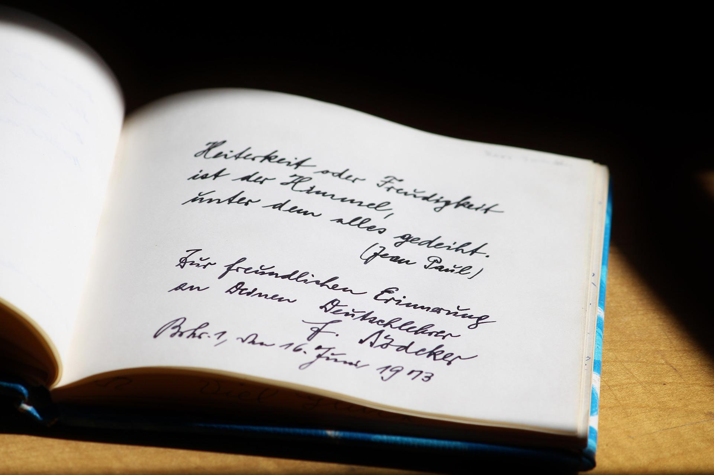

Sejarah
Poetry atau puisi adalah sebuah bentuk karya sastra yang diolah dari berbagai kecamuk perasaan yang diungkapkan oleh seseorang.
menurut Kamus Besar Bahasa Indonesia (KBBI) tahun 2016, definisi puisi diartikan sebagai ragam sastra yang bahasanya terikat oleh irama, mantra, rima serta penyusunan larik dan bait juga sajak.
puisi sudah ada sejak abad ke-3 SM, Penyairnya bernama Epos Gilgames, yang berasal dari Sumeria (Irak). Puisi tersebut ditulis dalam naskah kuno yang terbuat dari tanah liat dalam bentuk Baji.
Beberapa masa kemudian, bermunculan berbagai puisi oleh penyakit-penyakit Yunani dan Romawi Kuno, seperti Epos Iliad dan Odyssey karya Homerus.
Kemudian di rentang tahun 1700-1200 SM, banyak ditemukan puisi-puisi kuno karya Veda India dan Zoroaster’s Gathas dari India (1.200-900 SM) ke Odyssey (800-675 SM).
Di Indonesia sendiri, puisi telah ditemukan sejak masa kerajaan-kerajaan Hindu dan Budha, ditulis dalam bahasa Sansekerta ataupun bahasa Jawa Kuno. Namun pembawaannya dalam bentuk nyanyian.
Setelah zaman mengalami kemajuan, seiring pula dengan bermunculannya tokoh-tokoh penyair hebat dan legendaris, dengan karya-karya yang hingga kini masih dikenang, seperti Buya Hamka, Taufik Ismail, Chairil Anwar dan masih banyak lagi.
Jenis

Secara umum, puisi terbagi menjadi 2 jenis, yakni puisi lama dan puisi baru. secara penjelasan ringkas adalah sebagai berikut :
Puisi lama, yaitu mantra merupakan jenis puisi yang dicipatakan dalam kepercayaan animism, biasanya dibacakan dalam acara ritual kebudayaan serta menggunakan kata yang dapat menimbulkan efek bunyi magis.
Pantun merupakan jenis puisi lama yang bersajak a b a b dengan setiap baris terdiri atas empat baris, dua baris sampiran dan dua baris isi. Sedangkan talibun terdiri dari sampiran dan isi lebih dari empat baris dan selalu genap, contohnya dua baris sampir dan dua baris isi.
Syair memiliki larik empat bait dan bersajak a a a a serta isinya mengisahkan suatu hal, dan gurindam merupakan jenis puisi lama yang terdiri atas dua baris, berirama sama, isinya baris pertama adalah sebab sedangkan baris kedua berisi akibat.
Puisi modern biasa disebut puisi bebas, karena tidak terikat oleh rima, jumlah baris dan lain sebagainya.
Jenis puisi modern, yaitu puisi naratif merupakan puisi yang digunakan untuk menyampaikan suatu cerita, dibedakan menjadi tiga yaitu epic, romansa dan balada. Jenis kedua puisi modern adalah puisi lirik yang digunakan untuk mengungkapkan gagasan penyair, jenis terakhir puisi moderen adalah puisi deskriptif, yaitu puisi yang mengemukakan pendapat serta kesan penyair.
Dalam menyusun berbagai jenis puisi harus memiliki kreativitas dalam diri serta cara menulis yang baik.
Author Poetry
Sang Padi dan Dunia
langit yang indah bumi yang sempurna
Engkau sering dijadikan pengandaian
Pengandaian terhadap sebuah perasaan
Perasaan kasih dan juga sayang
Desiran ombak pantai kau pun menjadi saksi bisu
Saksi bisu Ketikaku melakukan hal itu
Namun semua tlah sirna
Saatku ditegur olehNYA
Hingga ku tak tahu berbuat apa
Hanya kesedihan yang tak bersuara
Kalbu yang terpenuhi oleh nafsu
Bagai bunga yang menuntut tumbuh membisu
Danny~